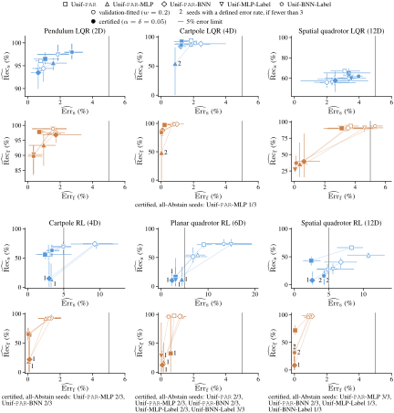

Fitted and certified predictors on identical data Paper Figure 3 Appendix C.2

The table reports all six settings after certification, for predictors trained on identical uniform data. The second figure extends Figure 3 of the paper to all six settings and adds the MLP predictors, using the same training trajectories and test states. The validation-fitted thresholds minimize the fitting objective at and impose no 5% error limit, so their test errors can exceed the limit. The validation-fitted test success prediction error exceeds 5% in 36 of the 90 runs. The faint line joining each predictor's two points shows how certification changes its recall and prediction error.
The full comparison includes Unif-MLP-Label and Unif-PAR-MLP. After certification, both binary-outcome predictors have higher mean recall for both outcomes than Unif-PARSE on cartpole RL, with 62.90% success recall compared with 55.62%. On the pendulum, both binary-outcome predictors have slightly higher success recall, while Unif-PARSE has the highest failure recall. The higher recall of Unif-PARSE in the table does not extend to the other terminal-state predictors: Unif-PARSE-MLP and Unif-PARSE-BNN abstain everywhere in two of the three cartpole RL seeds, and Unif-PARSE-MLP in all three spatial quadrotor RL seeds.
